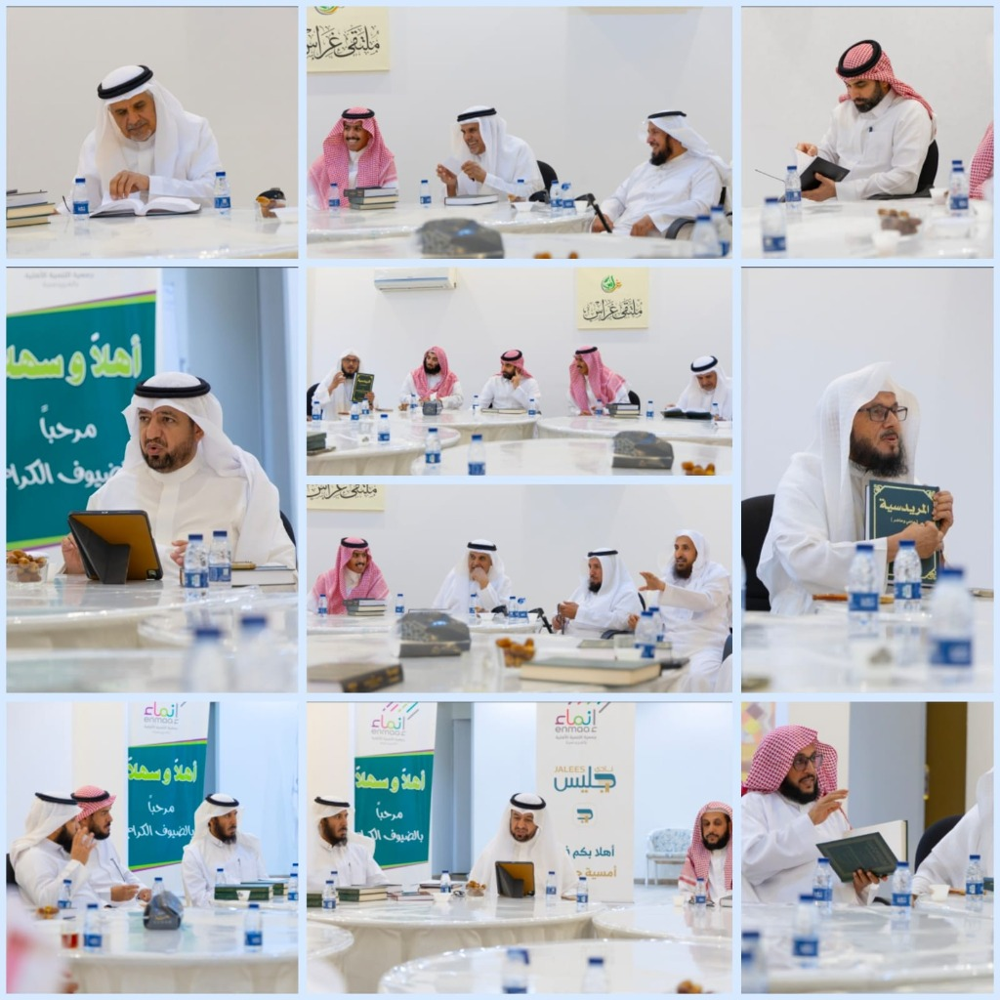
📖 لقطات حية من جلسة عرض ومناقشة الكتابعرض ومناقشة كتاب «المريدسية ماضٍ وحاضر»
أُقيم اللقاء مساء بتاريخ ٢٥/١١/١٤٤٧هـ، وحضر فيه (١٨) مشاركاً من الأعضاء والضيوف، وكان الحضور في غالبه من ضيوف النادي:
بناء مجتمع حيوي لقرّاء القصيم
بيئة دافئة تجمع قرّاء القصيم دورياً بمقر «إنماء» بالمريدسية؛ ففي لقاء ليلة ١٠/٥/١٤٤٨هـ وحده حضر (٥٠) عضواً من أعضاء النادي وضيوفه:
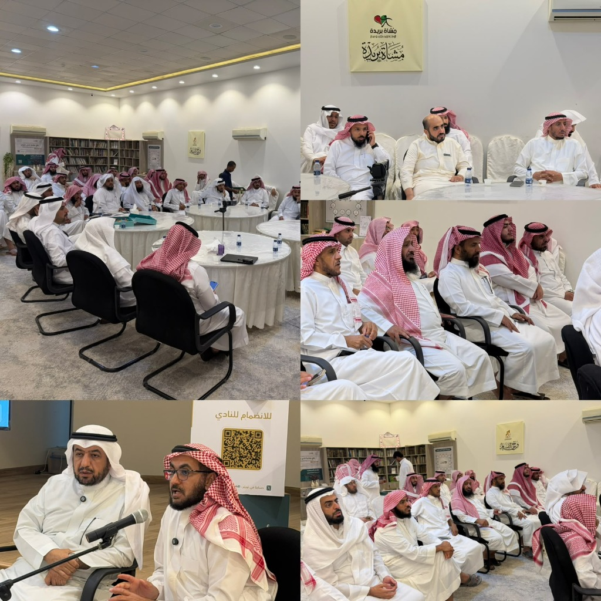
📸 مجتمع قرّاء القصيم في مقر الجمعية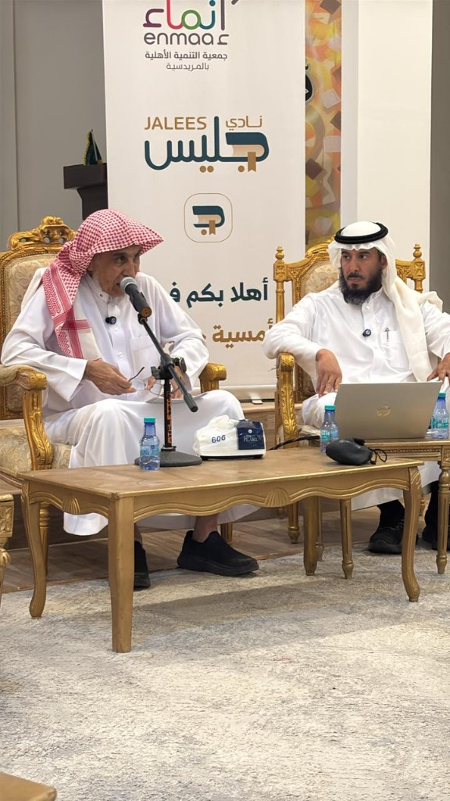
🎙️ جلسة القراءة في بناء الطفل بمقر جمعية إنماءالقراءة في بناء الطفل
أقامه النادي ليلة بتاريخ ٢٧/١١/١٤٤٧هـ، وهو اللقاء الثالث من سلسلة لقاءات التربية والقراءة، باستضافة الدكتور عبدالعزيز المقبل، وحضره (٢٥) عضواً من أعضاء النادي وضيوفه. أبرز محاور اللقاء:
معرض صور حيّة من مسيرة نادي جليس
لقطات توثيقية حقيقية تجسد روح اللقاءات والحوارات المعرفية التي يقيمها النادي بمقر جمعية التنمية الأهلية بالمريدسية.
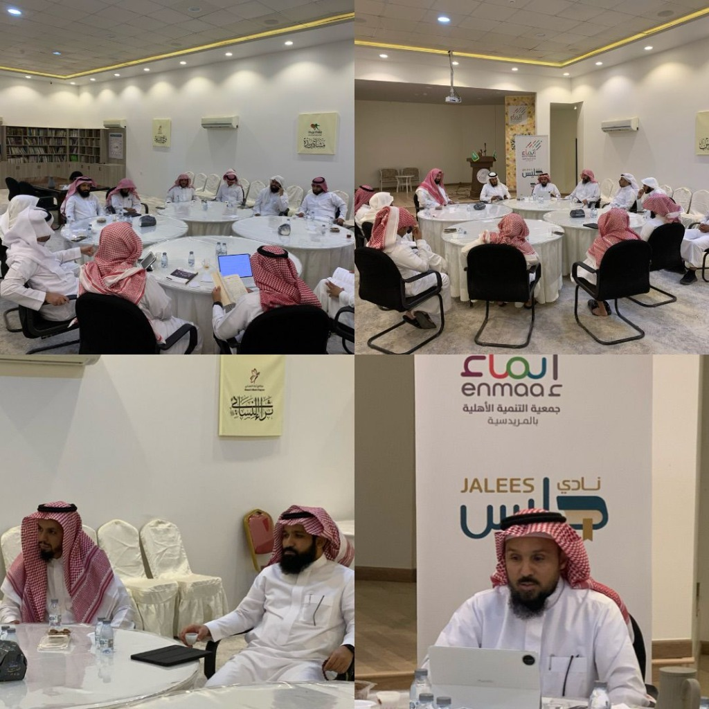
ترياق«ترياق»
البرنامج: مناقشة كتاب | التاريخ: ٢ ذو الحجة ١٤٤٧هـ
تقديم: أ. محمد العييري | الحضور: ١٥ عضواً
📌 المحاور الرئيسية
- قصة الكتاب: التصدّي للشبهات وتفنيدها بتأصيل شرعي، وسد القصور في هذا المجال.
- الوقاية والاستعداد: التأكيد على ضرورة العلم قبل النقاش، والتحذير من سماع الشبهات لأن «القلوب ضعيفة».
- المعرفة والأسس: الوحي لا يعارض العقل الصحيح، والشبهات تقوم على الكذب والخلل المرجعي.
- خطوات العلاج والنقض: دفع الوسواس بالتاءات الأربع، ونقض الشبهة عبر (التفكيك ➔ التثبت ➔ طلب الدليل).
- قضايا ومواضيع: الرد على شبهات مثل مشكلة الشر، حد الردة، وزواج النبي ﷺ.
- وصايا اللقاء: قوة المنطق خير من منطق القوة، والاعتزاز بالدين مع الاستمرار في التعلم.
حلقات نقاش وتداول أمهات الكتب والتاريخ المحلي
تداول المؤلفات التاريخية والأدبية في جلسات قراءة معمقة.
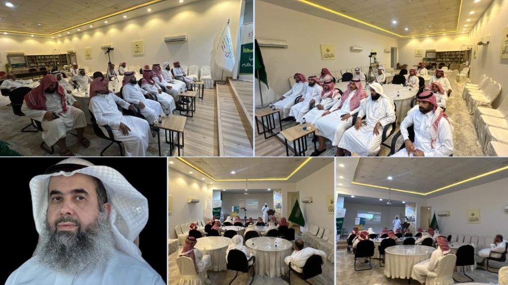
حكاية كتابالبرنامج: حكاية كتاب
«بيتر دركر | أبو الإدارة الحديثة»
البرنامج: حكاية كتاب | التاريخ: ٢ جمادى الأولى ١٤٤٨هـ
تقديم: أ. رائد القرعاوي | الحضور: ١٤ عضواً وضيفاً
📌 المحاور الرئيسية
- السيرة والمحطات: نشأته بين فيينا وأمريكا، وتحليله الداخلي للمؤسسات (مثل جنرال موتورز) لترسيخ الإدارة كعلم وممارسة.
- ركائز الإدارة: الإدارة بالأهداف (MBO)، تقديم الأثر والفاعلية، محورية العميل، واستثمار «العامل المعرفي».
- صناعة العقل الاستثنائي: تحويل المعرفة لخبرة عبر (اقرأ ➔ راقب ➔ اسأل ➔ اربط ➔ جرب).
- الاقتصاد السعودي: استغلال التحولات الوطنية (الرؤية والذكاء الاصطناعي) للانتقال من التلقي إلى صناعة الفرص.
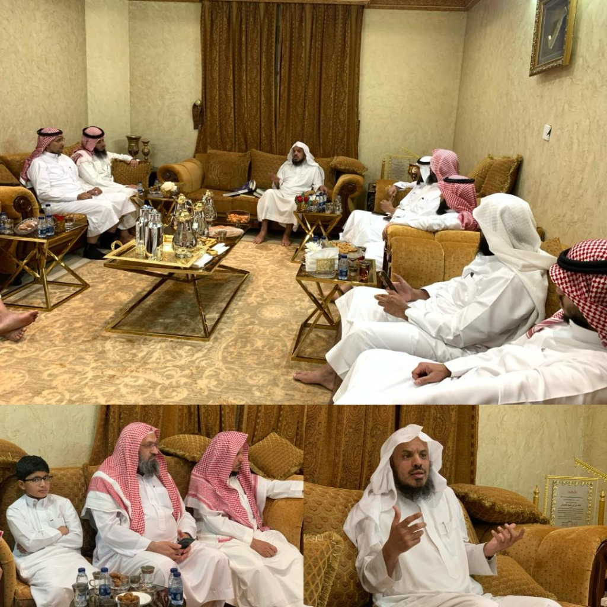
د. خالد الجعيثنزيارة جليس السابعة والأخيرة
التاريخ: ١٦ ذو الحجة ١٤٤٧هـ | الحضور: ١٥ عضواً وضيفاً
المستضيف: د. خالد الجعيثن
- أهمية القراءة: تُنمي الفكر واللغة، والتنوع فيها يوسّع المدارك.
- منهجيتها: إكمال الكتاب لالتزام الانضباط، وتكرار القراءة يُعمّق الفائدة.
📌 أبرز التوصيات
- السير والأدب: سير الأعلام (ابن باز، ابن عثيمين)، «جواهر الأدب»، «روضة العقلاء».
- الشرعية والتطوير: «رياض الصالحين»، «جوامع الأخبار»، «ما تحت الأقنعة».
- التربية بالقراءة: القدوة أمام الأبناء، وتحقيق التوازن بين جوانب التربية المختلفة.
ملتقى قرّاء القصيم وبناء مجتمع المعرفة
لقاءات دورية تجمع قرّاء القصيم وتوسّع آفاقهم المعرفية.
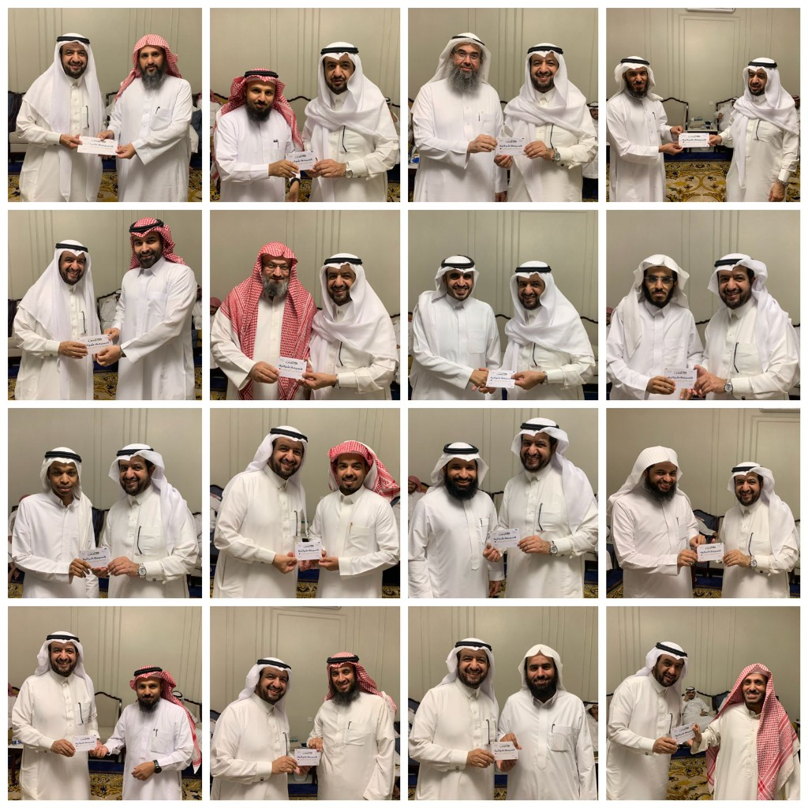
تكريم الأعضاءتكريم أعضاء ورواد نادي جليس القرائي
لقطات لتكريم القرّاء المميزين تقديراً لعطائهم المستمر.
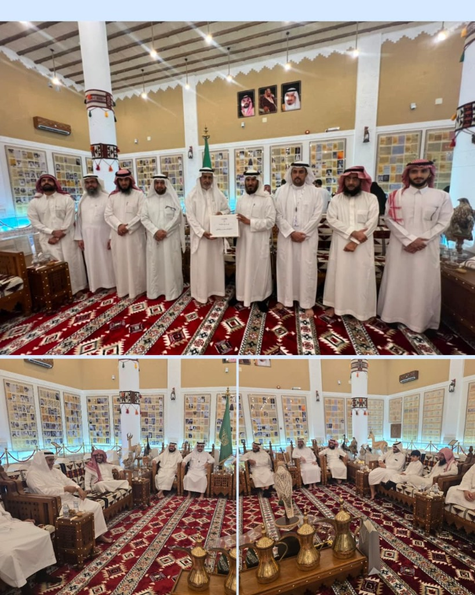
متحف العقيلاتزيارة متحف العقيلات التاريخي
تهدف الزيارة إلى التعرف عن قرب على تاريخ العقيلات وأثرهم الاقتصادي والثقافي، والتعرف على الجهود الكبيرة للتعريف بهم في هذا المتحف المميز.
يركّز المتحف على حفظ الوثائق والسجلات المكتوبة والمرئية التي تعكس الجوانب الاجتماعية والاقتصادية لتاريخ القصيم.
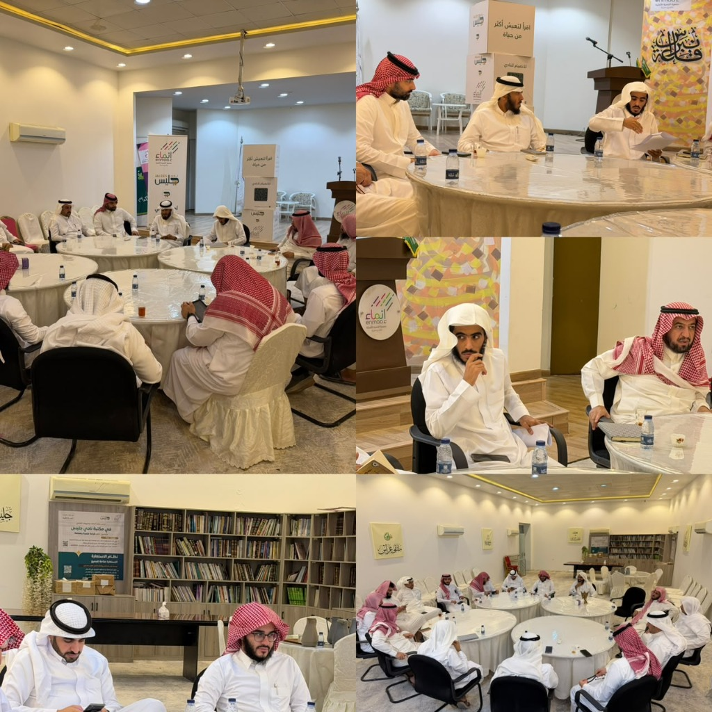
أمسيات مع شخصياتالبرنامج: أمسيات مع شخصيات (اللقاء الخامس)
التاريخ: ٢٩ محرم ١٤٤٨هـ
تقديم: أ. عبدالرحمن الصعب
الحضور: ١٥ عضوًا
📌 أبرز محاور اللقاء
- النشأة والحياة: أصله حضرمي ينتهي للصحابي وائل بن حجر، ولد عام 732هـ، وجمع بين العلم والسياسة.
- المسيرة السياسية: تنقل بين بجاية وقُفصة والأندلس، وتولى مناصب عدة، وتعرض للحبس في أول نكبة سياسية له.
- مواقف وأقوال: شاعر، صاحب مقولة «الأمة المغلوبة يسرع إليها الفناء»، ويرى أن عرب البادية أبعد الأمم عن الملك والسياسة.
- أبرز المؤتمرات والمؤلفات: المقدمة (علم الاجتماع والعمران)، كتاب العبر، لباب المحصل، وشرح البردة.
- النقاش: دار حول تميزه في علم الاجتماع.
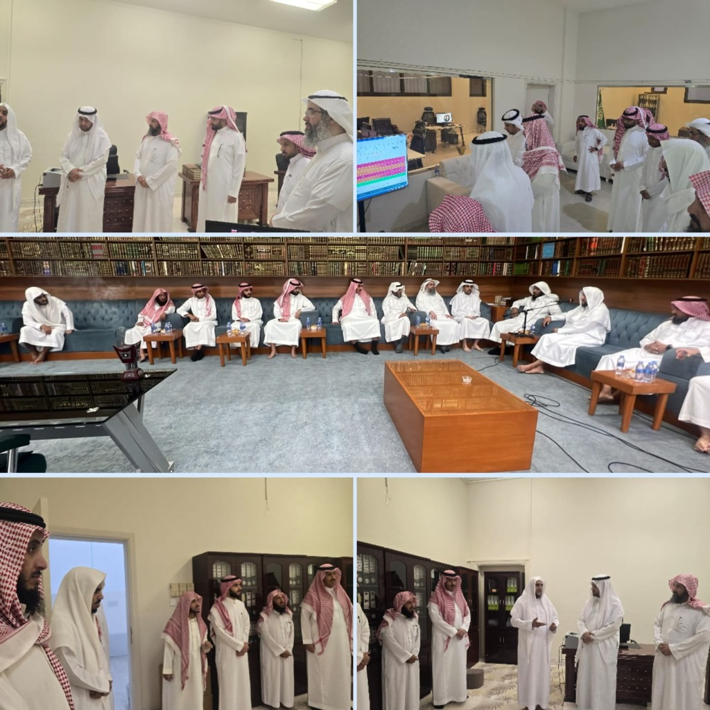
زيارة علميةزيارة علمية
التاريخ: الأربعاء ٢٦ ربيع الآخر ١٤٤٨هـ (عصراً)
الحضور: ١٤ عضوًا من نادي جليس
الهدف: تعزيز التواصل المعرفي، والاطلاع على جهود الجمعية وبنائها التعليمي في خدمة السنة النبوية
📌 أبرز محطات الزيارة
- التعريف بالجمعية: العرض الشامل لنشأتها ورسالتها في تأهيل وتخريج جيل علمي مؤصل في السنة النبوية.
- البرامج والمسارات العلمية: التعرف على البرامج المتخصصة (الجمع بين الصحيحين، زوائد السنن، بلوغ المرام، عمدة الأحكام، المتون العلمية، فقه العلماء) والاطلاع على مؤشرات الأداء والإحصائيات.
- جلسة الحوار: مناقشة سبل العناية بالحديث الشريف وتدارسه ونشره.
- الجولة والختام: الاطلاع على أقسام الجمعية ومرافقها، والتأكيد على بناء شراكة مستدامة بين الطرفين.
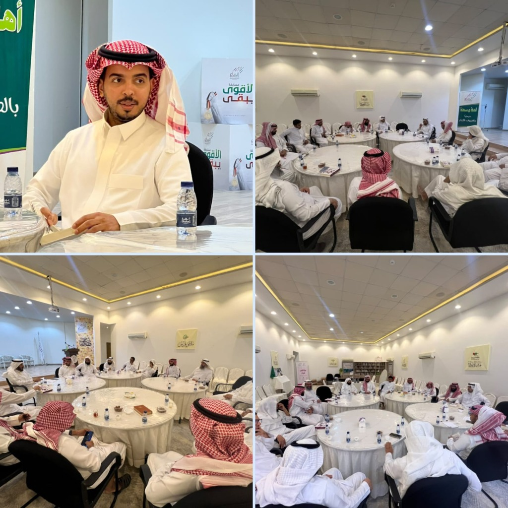
لقاء مناقشة«كيف تقنع الآخرون»
البرنامج: لقاء مناقشة | التاريخ: ١٨ ربيع الآخر ١٤٤٨هـ
تقديم: أ. خلف اللهيدي | الحضور: ١٥ عضواً وضيفاً
📌 المحاور الرئيسية
- عرض الكتاب: تقديم شامل ومتميز لمحتوى الكتاب وإطاره العام.
- الاقتباسات: استعراض مقاطع مختارة ومناقشتها مع الحضور.
- التساؤلات: طرح أسئلة عميقة وتداول الآراء حولها.
- جوانب التحسين: مناقشة ملحوظات النقاد وفرص التطوير في الكتاب.